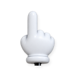

TinyHand
A tiny hand on a stick that points at things on any website.
Pointer
Appearance
Draw
Slap
Sound
Keyboard shortcuts
Turned off on
About
The hands and tap sounds are from TinyHand by Kamran Ahmed, a Mac app, used under its MIT license. Hiding the cursor follows Purrsor by Lucie Haberer, also MIT.
The hand doesn't show on browser pages like this one, the new tab page or the Chrome Web Store, where extensions can't run.